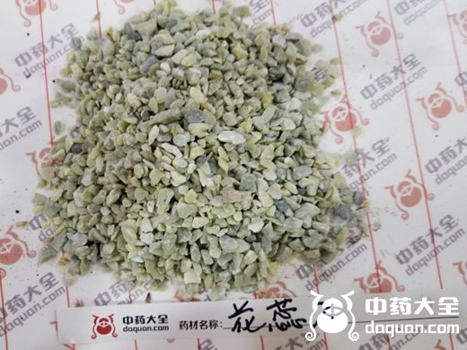

原文出处:本文转载自中药大全网。
原文连接:https://www.daquan.com/post/2289.html
原文连接:https://www.daquan.com/post/2289.html

花蕊石原石图片

花蕊石图片
本品为少常用中药。始载《嘉祐本草》。原名“花乳石”。
来源：为矿产含蛇纹石的大理石。
产地：主产于陕西、陕西、河南、浙江、湖南等地。
性状鉴别：本品呈不规则的块状，大小不一。表面灰白色，粗糙。体重，质坚硬，不宜破碎。断面不平坦，有黄色、黄绿色与类白色的彩云夹杂其间，对光照之有闪星状亮光。气微，味淡。
取本品碎片碎末少许，加20%硫酸，即发泡溶解，再在显微镜下观察，可见有针簇状的硫酸钙结晶析出。
以块整齐，坚硬，夹有黄绿色彩云者为佳。
主要成分：含碳酸钙和少量铁、铝、镁。
药理作用：收敛、止血、祛瘀。
炮制：煅透，打碎。
性味：酸、涩、平。
归经：入肝经。
功能：化瘀、止血。
主治：吐血、衄血、便血、崩漏，产地血晕。外敷止金疮出血。
临床应用：较常用于肺结核咯血和外伤出血瘀肿，有止血散瘀作用。配白芨治咯血，方如花蕊白芨散。配乳香、没药、苏木、降香、细辛等研末，调敷外伤瘀肿部位，有助于去瘀止痛。
用量：入煎剂9～15g，研末服每次0.9~3g，最多至6～9g。不宜多服。外用适量。
处方举例：花蕊白芨散：煅花蕊石12g、白芨12g、血余炭6g，共研极细末，每服3～6g凉开水冲服(治咯血)，每日3次。